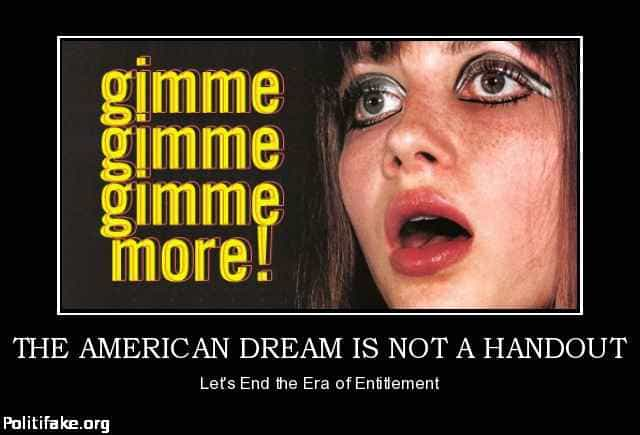
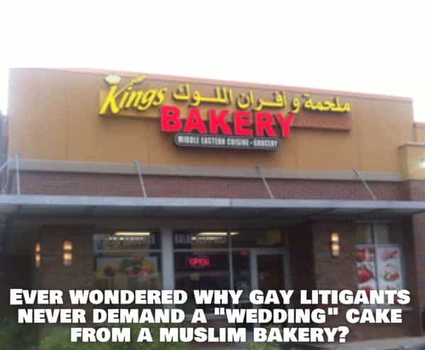

"You know, walk the earth, meet people... get into adventures."


Next Tuesday is the American election, and, for better or for worse, we’ll pick the next President at that time (assuming we don’t get mired in voter fraud and recounts), and we’ll either brace for government mandated SJW enemas or bask in a temporary setback of those evil people. But, today, I want to talk on Trump once to match an article from last week, and I intend to focus on how he is the American candidate, as opposed to the special interest groups’ one.
I had a conversation last week with some people who acted as SJWs, but were later presented by a mutual friend as libertarian. The discussion immediately went nasty, with my opposition painting Trump (and anyone who supported him) as a racist and a bigot. Upon trying to determine why two of the left’s ubiquitous labels were applied to me this time, I learned that their perspective was, unless you were universally for all special interest groups, you were a bigot or a racist.
The problem, I found out, was that these people have distilled the political spectrum down into a black or white situation. Either you want all refugees here from the Middle East, all the Hispanics from any country south of the border to come here freely and citizenship for those already here, and that any black people shot by police are just misunderstood and were turning their lives around, or you’re a racist. There’s simply no middle ground.
They don’t understand that Trump is not a special interest candidate, by which I mean that he is not going to put any minority group ahead of the rest of us at our expense, but he is not racist towards minorities, or sexist towards women.
It is possible to be against illegal immigration, but treat Americans of Hispanic ancestry as valued citizens whom you will represent. It is possible to be against feminism, Affirmative Action, and the persecution of men for the profit of women, yet still value American women as Americans themselves. It is possible to note that some black people cause a disproportionate amount of crime, yet note that some police are racist, and see that there are bad and good cops AND bad and good black people.

The American Dream is that all men are created equal, and that’s men as in humanity, not just males. It is not that all men are equal, and there’s a big difference to note here. You have the same opportunities as everyone else when you are born with the exception of disability, and I do not know anyone, myself included, that is against governmental aid for the disabled.
What we have, instead, is the American Nightmare, where the left uses government and taxes for the most inane of causes, trying to fix any disadvantaged group’s lot, real or imagined, so that things will be better. They take from the producers, and give to the non-producers so that, according to their idealistic vision, they will suddenly become productive members of society (or become addicted to the welfare tit and vote Democrat for the rest of their lives.)
Long gone are responsible Democrats like Kennedy who told us to ask what you can do for your country. Every recent Democratic President, from Carter to Obama, and most of the Democrat Congressmen, view the working middle class of the country as simply a group to exploit for their pet special interest groups. Trump is the first candidate in a long time who isn’t for the blacks, or the gays, or the Muslims, or the feminists, or whatever, and that matters a lot.
The reason why not being for a special interest group (which is ALL that Hillary is for, with her youth vote, black vote, women’s vote, gay vote, etc.) is so important is that these groups, even put together, do not matter when it comes down to the good of the country. Don’t get me wrong, there’s plenty of good, hardworking black people, just like there’s the same for women, and for gays, and for young people, but these hardworking folks from all these groups aren’t going to be part of the BLM, or La Raza, or Lamda, because they’re too busy being productive Americans. Activism is for unemployed people.
What’s going to happen if we don’t placate BLM and just ignore them? They riot a bit more and some get arrested? What if we told them that people that commit crimes to protest being treated like they commit a lot of crimes is ass-backwards thinking and counter-productive to their goals? They’d quit rioting.

What would happen if we shut the Mexican border down to illegal immigration, but made a straightforward, but strict, path to citizenship for Hispanics that wanted to be citizens? What if we said, this is America, we appreciate your culture and encourage to preserve it and your language in your children, but the national language IS English, and all business and schooling will be done in it, and in it only, and it’s your choice to not learn it, but the difficulties that will arise from that choice are all on you? They’d be Americans, proud of their heritage and their legal immigration and citizenship as well.
What would happen if we told gay people that it’s cool if they have civil unions under the law, and have the same rights as everyone else, but it’s not cool trying to pick a fight with a Christian bakery to make the government hall monitor come drive them out of business just because their belief in their God and that you’re sinning makes you uneasy and worried that they might actually be right?
What if we told them it’s ok to do whatever you want with another consenting adult, but you don’t have to try to make five-year-olds decide if they’re gay or straight when they shouldn’t be wondering about that till puberty hits? They’d be normal Americans who just happen to like sex with the same gender, and they’d quit pushing their agenda and being obnoxious and in the rest of our faces.

What would happen if we talked to Muslims and said that there is a huge, deafening, silence when it comes to the subject of Islamic Terrorism from them that makes it hard to trust any of them? What if we told them that we needed their help to bring the religion out of its tacit acceptance and support of terrorism, and part of that help means supporting us vetting Muslims coming here more strictly until they are no longer statistically more likely to be terrorists than people of other religions and ethnicities? They’d go along with that and maybe realize we’re fixing a problem, not hating a people.
What would happen if we told women that feminism has all but killed modern marriage due to universal punishment of divorced men and that no punishment for false-rape accusers both makes men not trust women and insults any real rape survivor? What would happen if we told them that giving them jobs for their genitalia over their skills is destroying industries by lowering the only standard that matters, that of merit; that of excellence?
What if we told them that gender ratios and quotas may fix the macro view of sexism, but make the man passed over for the position solely because you were female pissed as all hell towards women and, when you do that to the majority of men, you’ll be just as successful, and just as hated by men as men were and were hated by you in years past? They’d realize that it’s not a competition, it’s a cooperation, and maybe skill should be valued over sex.
What would happen if we stopped all these divisive issues that really don’t do anything other than tear us apart and work on a better economy, on rights for all, on border security? What would happen if we simply looked at each other as Americans, and put us, all of us, first? What would happen if we ripped out the crap in the Federal government that overtaxes people, or deploys armed forces against our own countrymen? What would happen if we made the Supreme Court Constitutional again, and made term limits a reality for Congress? Maybe we could get a government for, by, and of the people again. Maybe America can indeed by great again like the man says.
I’m not in a special interest group. No President, outside of George W. Bush right after the September 11th attacks, that I can recall since my childhood, has been for me as an American. I’ve always been someone to be taxed, to be disarmed, to be hated, to be blamed. It’s not racism or bigotry to want us all to be treated as equals and not be penalized for real and imagined wrongs that occurred in the past before I was born, or more recently yet with which I had nothing to do.
I’m not part of the problem. I’m an American; the people who say I am part of the problem are the problem. Their candidate, mired in scandal, corruption, and treason, is Hillary Clinton. Mine, with a message of hope for the country, not just some groups in it, is Donald Trump.
Read More: 4 Reasons Liberalism Is A Cult